Estação Santa Apolónia
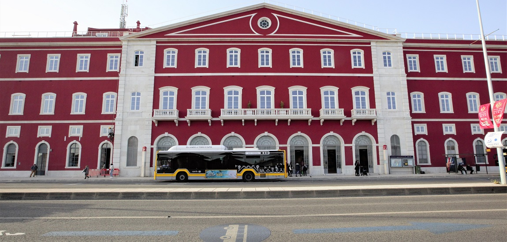
Estação Santa Apolónia - Acabaste de chegar à cidade de Lisboa. Identifica a tua posição no terreno. Estás na estação de Sta. Apolónia, inaugurada 28 de Outubro de 1856 , data da primeira viagem de caminho de ferro em Portugal. Facto curioso: custou na altura 255.164 $ 000 reis, o equivalente a pouco mais de 1 euro e 27 cêntimos.
Casa dos Bicos
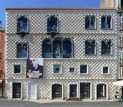
Vamos caminhar para o Terreiro do Paço , em direção a que ponto cardial? No caminho irás passar na Casa dos Bicos. Foi construída em 1523 e destaca-se pela sua arquitetura. Funcionou como armazém e hoje é a sede da Fundação José Saramago.
Estátua Equestre
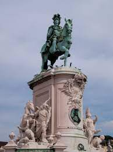
A Ocidente está a Praça do Comércio ou Terreiro do Paço, que foi o local do palácio dos reis de Portugal durante cerca de dois séculos . Capta uma foto da estátua equestre de D. José I, no centro da praça.
Lisbon Story Center
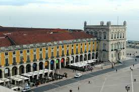
No Lisbon Story Center, podes captar fotos e som nos espaços permitidos. Capta imagem da passarola cuja invenção é atribuída a Bartolomeu de Gusmão, padre e cientista.
Arco da Rua Augusta
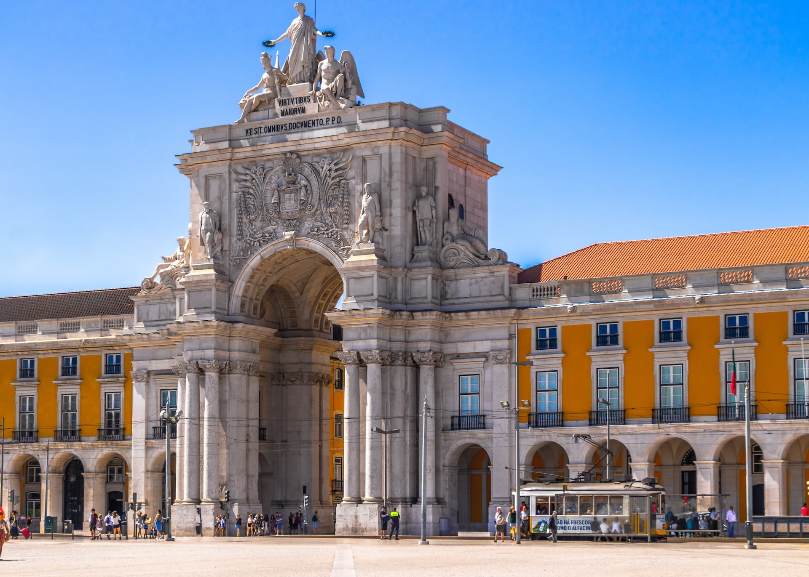
Vamos subir até a Praça do Rossio pela Rua Augusta, que homenageia a augusta figura de D. José I. Capta uma imagem do Arco da Rua Augusta.
Café Restaurante Martinho da Arcada
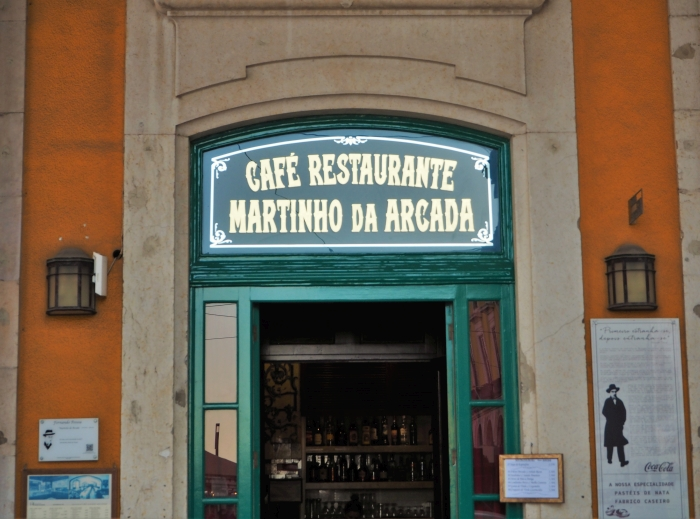
Antes de enveredares pela Rua Augusta , à tua direita ,fica o café mais antigo da cidade que se encontra atualmente a funcionar. A sua história de mais de dois séculos está ligada à literatura portuguesa.
Banco de Portugal
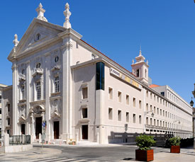
Ao cruzares a Rua do Comércio, capta uma imagem da sede do Banco de Portugal.
Elevador do Carmo
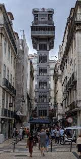
Ao cruzares a Rua da Sta. Justa, avistas o elevador de Santa Justa ou Elevador do Carmo, inaugurado em 1902. Liga a Rua do Ouro ao Largo do Carmo. Capta uma imagem desta estrutura, que é um dos monumentos mais importantes da Baixa Pombalina.
Praça do Rossio
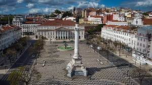
A Praça do Rossio (Praça D. Pedro V) delimita a Norte a área da Baixa Pombalina. Capta uma foto do Teatro D. Maria II, inaugurado em 1846, durante as comemorações do 27º
Igreja S.Domingos
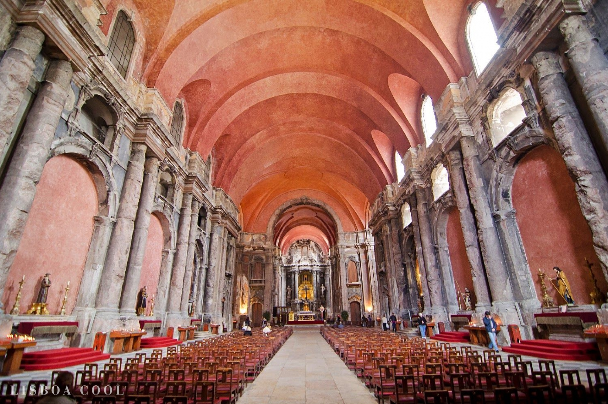
O próximo ponto de encontro é na Igreja de S. Domingos, de onde , em tempos idos, saiam, em procissão, os condenados à morte pela Inquisição. Capta uma imagem da igreja e do monumento de homenagem às vitimas do massacre judaico em 1506.
Mouraria
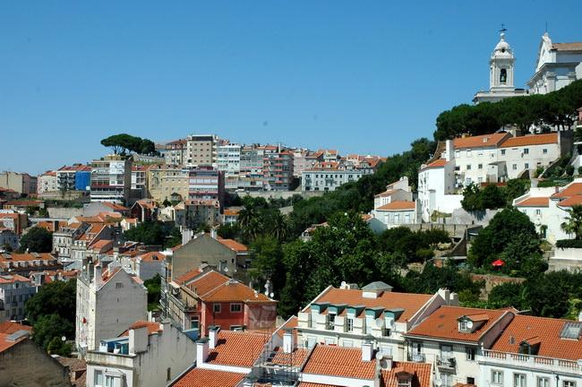
Vamos iniciar a visita à mouraria , um dos bairros mais tradicionais de Lisboa, ponto de encontro de diferente culturas. Faz fotos que, na tua opinião, captem essa essência de multiculturalidade.
Estação do Rossio
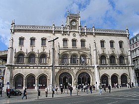
O nosso ponto de retorno é na Estação do Rossio, planeada e construída na década de 1880. Apresenta-se segundo um modelo revivalista neomanuelino e de arquitetura de ferro. Capta uma imagem.